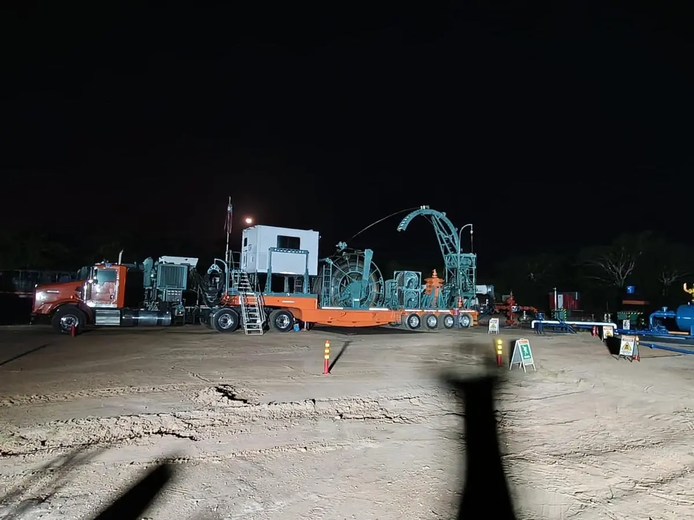
- Inicio
- Equipos & flota
Equipos
& flota
Flota propia, inspeccionada y certificada para movilizarse en menos de 24 horas.
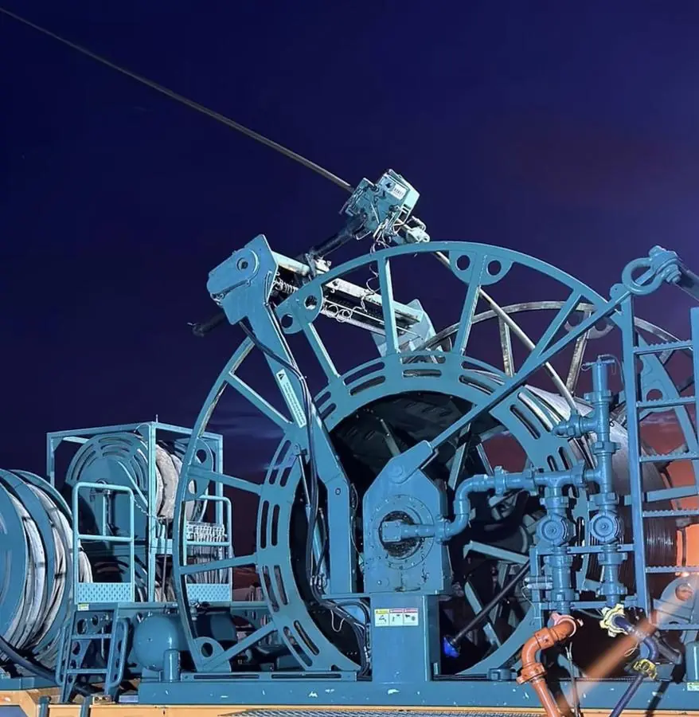
Unidad de
Coiled Tubing
Unidad de tubería continua de alta capacidad montada sobre remolque, con cabezal inyector, carrete de trabajo, cabina de control Jereh y stack BOP de control de pozo. Diseñada para operar con la máxima longitud de tubería en las condiciones exigentes de los campos venezolanos.
| Tubería | 1¾" · hasta 10,000 ft |
|---|---|
| Designación | Unidad SW 100K |
| Montaje | Remolque |
| Control | Cabina Jereh |
| Control de pozo | Stack BOP + stripper |
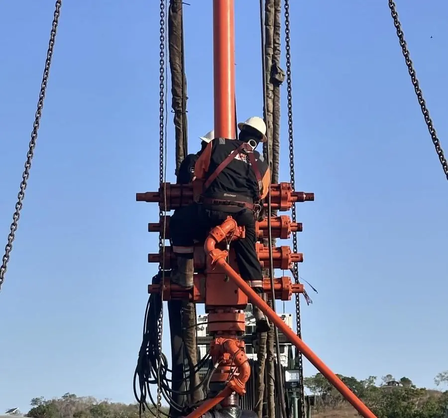
Técnico en el stack BOP
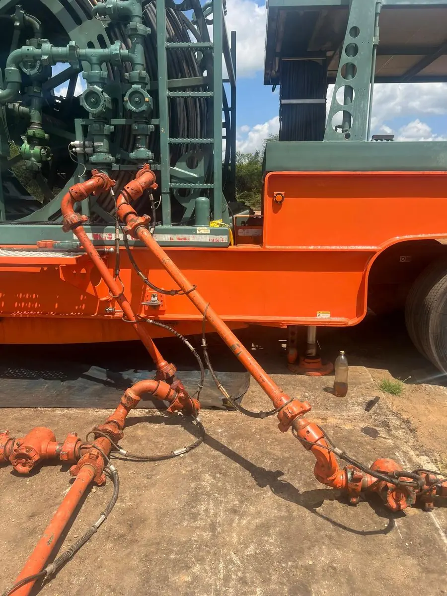
Líneas y conexiones de alta presión
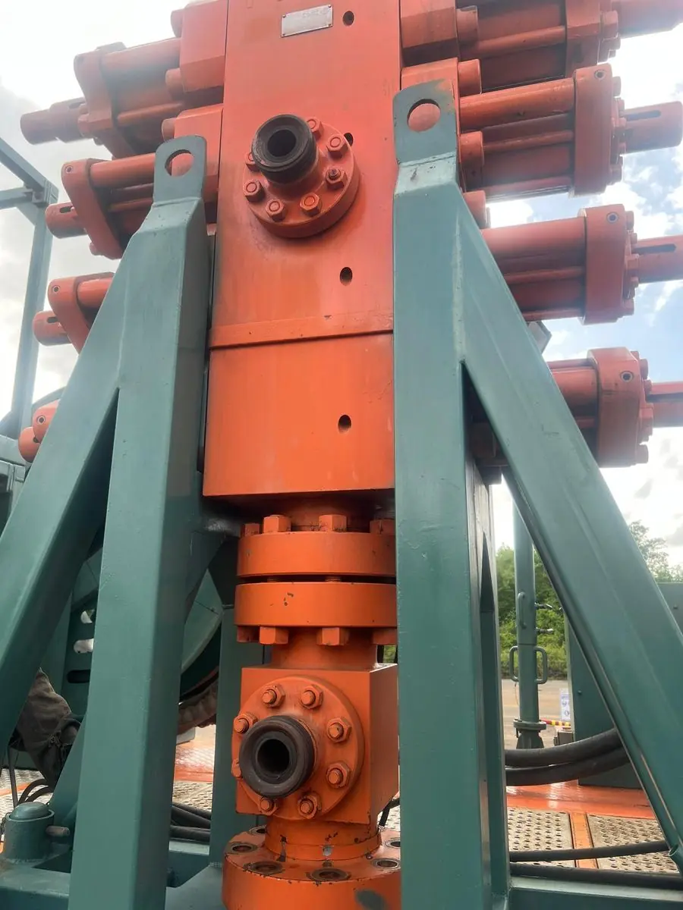
Stack BOP bajo el inyector
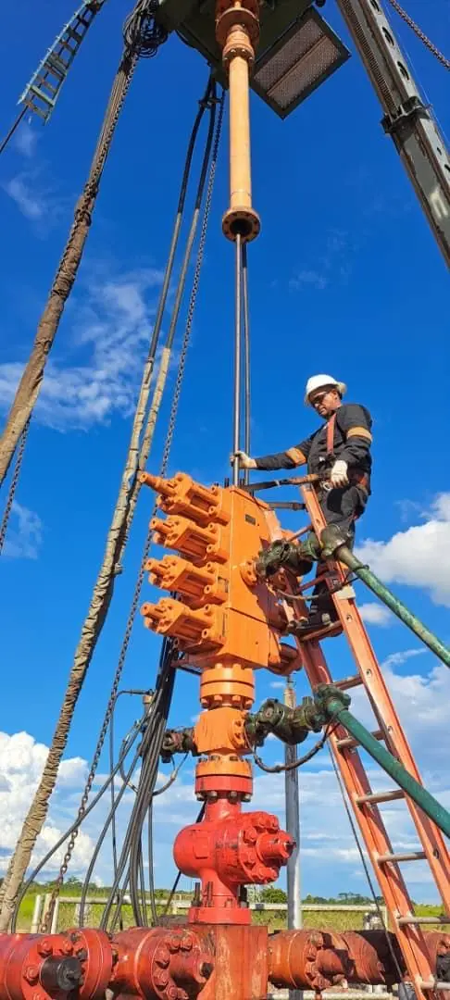
Trabajo en altura certificado
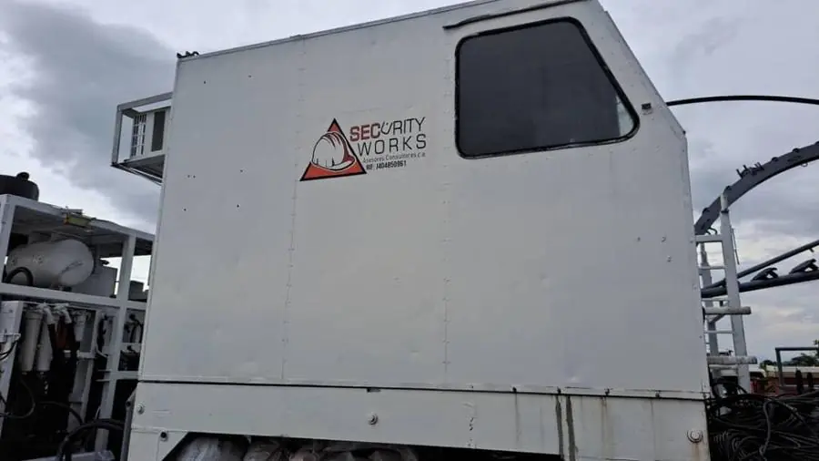
Cabina de control en locación
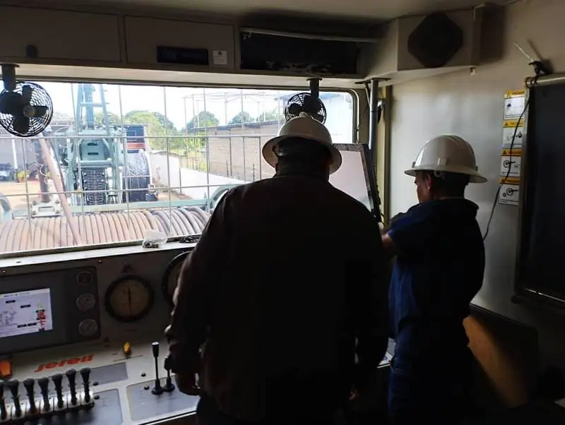
Operación desde cabina
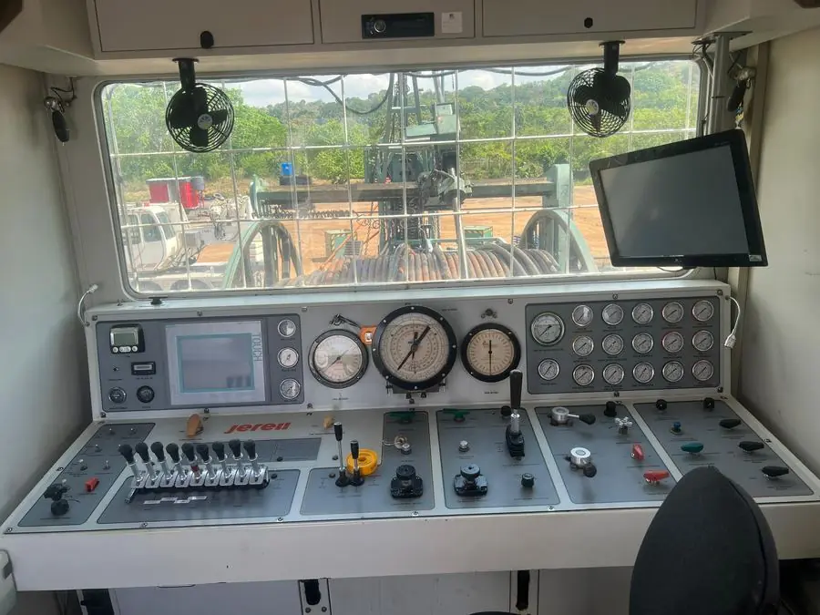
Cabina
Jereh
Cabina de control de fabricación Jereh con pantalla táctil, manómetros de alta precisión y mandos hidráulicos del inyector, carrete y stack BOP. El operador mantiene vista directa al carrete y al inyector y monitorea peso, presiones y profundidad en tiempo real.
| Fabricante | Jereh |
|---|---|
| Interfaz | Pantalla táctil + instrumentación analógica |
| Instrumentación | Panel múltiple de manómetros |
| Monitoreo | Tiempo real |
| Visibilidad | Directa a carrete e inyector |
Siempre listos
Nuestros equipos se mantienen certificados y operativos para iniciar de inmediato. La flota puede desplegarse en menos de 24 horas desde la solicitud del cliente.
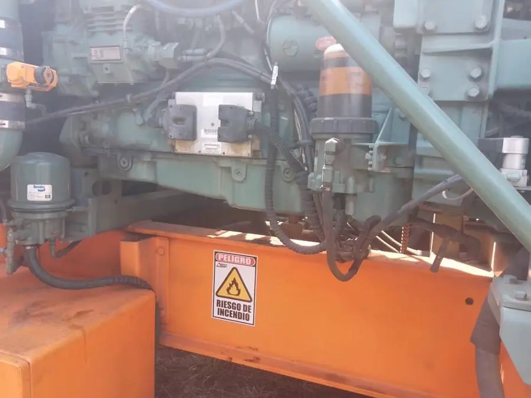
Bombas triplex
600 HP
Dos unidades de bombeo de fluidos a alta presión (WT 1201 y WT 1202), cada una con bomba triplex de 600 HP accionada por motor Detroit Diesel, con tanques de desplazamiento y mezclado y bomba centrífuga de alimentación.
| Unidades | WT 1201 · WT 1202 |
|---|---|
| Potencia | 600 BHP @ 2,200 rpm c/u |
| Motor | Detroit Diesel |
| Émbolos | 3" |
| Tanques de desplazamiento | 2 × 11 bbl con mezclado |
| Bomba de alimentación | Centrífuga 5" × 4" |
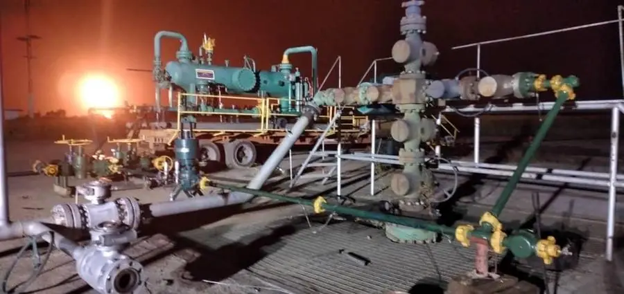
Equipos de
well testing
Tren completo de prueba de producción con choke manifold, separador y quemador. Permite medir y controlar el flujo de crudo, gas y agua del pozo durante la prueba y quemar el gas de forma segura.
| Configuración | Choke manifold + separador + quemador |
|---|---|
| Medición | Crudo · gas · agua |
| Operación | Continua 24/7 |
| Montaje | Remolque · movilizable |
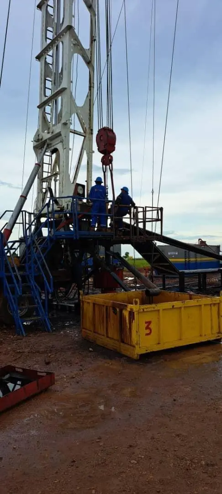
Taladros
workover
Equipos de rehabilitación para cambio de completaciones, cabillas y bombas de subsuelo, con stacks BOP, strippers y herramientas de limpieza, más equipos de apoyo propios para la locación.
| Trabajos | Tubería · cabillas · completaciones |
|---|---|
| Control de pozo | Stacks BOP completos |
| Strippers | Incluidos |
| Grúas auxiliares | 2 × 30 t |
| Camiones vacuum | 2 × 36,000 L |
| Tanques en locación | 4 × 500 bbl |
| Cobertura | Nacional |
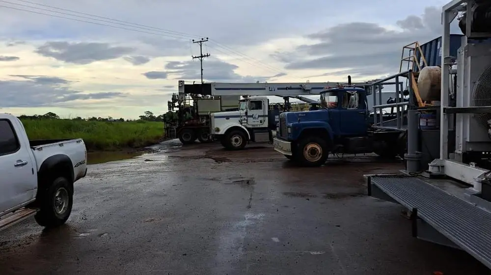
Operativos bajo cualquier clima

Equipos de respiración autónoma MSA
HSE integrado en cada operación
Todos los equipos operan bajo protocolos HSE. El personal está formado en atmósferas peligrosas, control de derrames y uso de equipos de protección, y contamos con equipos de respiración autónoma MSA para trabajos con presencia potencial de H₂S.
Stewart & Stevenson
NT-181-NF
Unidad de bombeo de nitrógeno montada sobre remolque, capaz de entregar nitrógeno gaseoso a alta presión con temperatura de descarga controlada. Clave para inducción, estimulación con fluidos energizados, purgas y pruebas de hermeticidad.
| Modelo | NT-181-NF |
|---|---|
| Caudal | hasta 3,000 scfm |
| Presión máxima | 10,000 psi |
| Motor | Detroit Diesel · 600 BHP @ 2,100 rpm |
| Montaje | Remolque · movilizable |
- Inducción de pozos y levantamiento con N₂
- Estimulación con fluidos nitrogenados y espumas
- Purga y desplazamiento de líneas a alta presión
- Soporte a operaciones de control de pozo
- Pruebas de hermeticidad de tuberías y equipos de superficie
Respaldo
internacional
Miembros de la IADC (International Association of Drilling Contractors), referencia mundial en seguridad, formación y buenas prácticas para contratistas de perforación y servicios a pozos.
Equipos entregados
ya certificados
Al cerrar cada mantenimiento mayor o reparación, el equipo sale inspeccionado, probado y certificado dentro del mismo programa. Sin esperas adicionales ni una segunda movilización.
- Mantenimiento + certificación en un solo procesoMenos días fuera de servicio para el equipo del cliente.
- Más de 15 años de experienciaTrayectoria del equipo técnico en equipos de control de presión de la industria venezolana.
- Menos costos logísticosUna sola movilización para mantener y certificar.